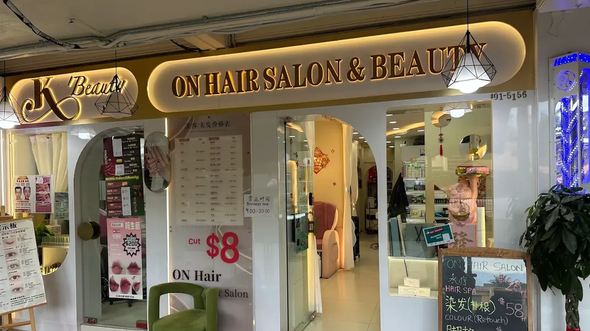

The short answer
The best hair salon near you in Bukit Merah is one you can reach easily enough to keep up regular trims, with clear prices, stylists who ask about your hair history, honest advice about what you don't need, and reviews that mention real results. On Hair Salon & Beauty has two outlets in Bukit Merah Central: Blk 2 (#01-5156) and Blk 163 (#02-3601).
Type "hair salon near me" anywhere around Redhill, Tiong Bahru, Telok Blangah, Alexandra or Henderson and you'll get a long list of results. Proximity narrows it down. It doesn't tell you where you'll get a haircut you're happy with for years to come.
A good neighbourhood salon should make life easier: a quick trim between errands, an honest conversation about colour, and a stylist who remembers that your hair frizzes the moment it rains. Here's how to find one, with a few things we have learnt from years of cutting hair in the heartlands.
Our Two Bukit Merah Outlets
Bukit Merah Block 2
Blk 2 Bukit Merah Central, #01-5156, Singapore 150002. Co-located with our sister brand K Beauty. Directions and contact
163 Bukit Merah Central
Blk 163 Bukit Merah Central, #02-3601, Singapore 150163. Directions and contact
1. Choose a Location That Fits Your Week
The most convenient salon isn't always the closest one on the map. It's the one that fits into the week you actually live. Is it on your way home from work, near the market you visit on Saturdays, or close to your children's school?
Convenience matters more than it seems. Hair that gets trimmed regularly stays healthier and easier to manage, and people only keep up with regular trims when the salon is easy to get to.
Tip: check the opening hours as well as the distance. A salon that's open into the evening makes an after-work touch-up realistic instead of a weekend-only plan.
2. Look for Prices You Can See Upfront
Price isn't everything, but surprises at the counter are nobody's favourite part of a salon visit. A trustworthy salon shows its prices clearly and explains why some services are quoted as a range. Longer, thicker or previously treated hair takes more time and product.
For reference, here's what our current price list shows for the most popular hair services:
| Service | Listed price |
|---|---|
| Cut (men's and women's) | S$6 to S$8, depending on outlet |
| Shampoo and Cut | S$20 to S$38+ |
| Colour or Highlight | S$58 to S$188+ |
| Rebonding, Cut and Treatment | S$98 to S$298+ |
| Keratin Treatment | S$98 to S$298+ |
Services marked "+" are starting prices, and the final price is confirmed after consultation, before any work begins. The full list is on our services page.
3. Check the Service Mix
A practical neighbourhood salon should handle more than haircuts, so you don't need a different place for every need:
If you only need a quick trim, a simple service is enough. But if your hair is dry, frizzy or damaged, it's worth choosing a salon that can advise you properly instead of just cutting quickly. Our guide to when hair needs treatment, not just a trim explains the difference.
4. Choose Stylists Who Ask Questions
Singapore's weather can make hair oily, flat, frizzy or dry, sometimes all in the same week. A good stylist doesn't only ask what style you want. They look at your texture, face shape and past chemical services, and ask how much time you want to spend on your hair each morning.
A good hair salon should give honest advice instead of pushing unnecessary services. Your stylist should be your partner in hair health.
If a salon starts cutting before asking a single question, that's worth noticing. Here's how our consultation works, if you'd like to compare.
5. Read Reviews the Smart Way
Reviews on Google and social media are useful, but it helps to read them like a detective rather than a scoreboard.
- Look for specifics. "They fixed my brassy colour and explained the aftercare" tells you more than "good service".
- Check how recent they are. Reviews from the past few months reflect the team you'll actually meet.
- Notice regulars. Customers who mention coming back again and again are a strong signal.
- Look for real photos. Before-and-after pictures show a salon's actual work, especially for colour and rebonding.
- Read the replies. How a salon responds to criticism says a lot about how it treats customers.
6. Make Sure It Feels Comfortable, and Clean
You should feel at ease explaining what you want, asking about prices or saying you prefer something simple. Pay attention to the small signs of care: clean tools and basins, fresh towels and capes, and a team that checks the water temperature before rinsing.
Green Flags vs Red Flags
| Green flag | Red flag |
|---|---|
| Prices are shown clearly, and ranges are explained | The price is only "revealed" at the counter |
| Your stylist asks about your hair history | Chemical services start without a single question |
| You're told when you don't need something | Every visit comes with a package pitch |
| Aftercare advice is part of the service | You leave with no idea how to maintain the result |
| Customers mention coming back for years | Reviews are vague, old or suspiciously similar |
Think Long Term
Changing salons every visit means starting from zero every time. When a stylist knows your hair history, what you've coloured, what you've rebonded and what didn't work, they make better decisions with every appointment. That's especially valuable if you colour, rebond, perm or treat your hair regularly.
Frequently Asked Questions
How much is a haircut at your Bukit Merah outlets?
Haircuts at On Hair Salon & Beauty are S$6 to S$8 depending on the outlet. Message the outlet you plan to visit if you'd like the exact rate before you come in.
What are the opening hours in Bukit Merah?
Bukit Merah Block 2 is open daily from 9:00 AM to 8:00 PM, and 163 Bukit Merah Central is open daily from 9:00 AM to 10:00 PM. Hours may vary on public holidays.
Do the Bukit Merah outlets accept walk-ins?
Walk-ins may be accepted when the team has availability. For colour, rebonding, perms or weekend visits, booking ahead by WhatsApp is recommended.
Is K Beauty in Bukit Merah?
Yes. Our sister brand K Beauty, which focuses on facial, lash, brow and beauty treatments, is co-located with our Bukit Merah Block 2 outlet.
Final Thoughts
The best salon near you should be convenient, fairly priced, comfortable and honest about what your hair needs. If you live or work around Bukit Merah, a regular local salon keeps your hair easier to manage between visits, and saves you a trip across town.